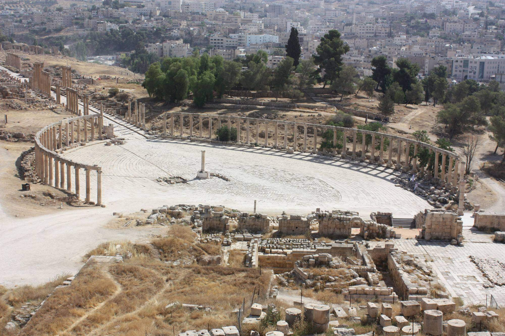

6 days · 5 nights
Jordan Delights Tour 1
From the castle of Ajloun and Roman Jerash down the King’s Highway to Petra, Wadi Rum and the Dead Sea.
From USD 1,065 per person
Day-by-day itinerary
-
Day 1
Arrival in Amman
Overnight Amman
You’re met at Queen Alia International Airport (QAIA) and taken to your hotel in Amman.
-
Day 2
Ajloun, Jerash and Amman
Overnight Amman
After breakfast, drive north to Ajloun and its fortress, with wide views over the Jordan Valley. Continue to Jerash, one of the best-preserved Greco-Roman cities in the Middle East. In the afternoon, return to Amman for a city tour: the Roman Theatre, the Citadel and the Umayyad Palace, with visits to the Archaeological and Folklore Museums. Finish with free time to walk the old downtown.
-
Day 3
The King’s Highway to Petra
Overnight Petra
Spend the day on the King’s Highway, once part of the ancient Silk Road. In Madaba, the “City of Mosaics”, see St George’s Church and its Byzantine mosaic map of the Holy Land, and the Archaeological Park, which holds the remains of several Byzantine churches, including the mosaics of the Church of the Virgin, and a school that restores and conserves ancient mosaics. Take a detour to the monastery on Mount Nebo. The Bible tells how Moses climbed the mountain from the plains of Moab and was shown “all the land” promised to his descendants. Then visit the massive Crusader fortress of Shobak before continuing to Petra.
-
Day 4
Petra, then Wadi Rum
Overnight Desert camp, Wadi Rum
Petra, the “rose-red city, half as old as time”, was the capital of the Nabataeans, and its massive carved monuments and multicoloured stone are a wonder in themselves. The visit begins on horseback, then continues on foot through the Siq, a long, narrow gorge between overhanging cliffs, until the Treasury, Petra’s most famous monument, appears at its end. From there the city opens up little by little. In the early afternoon, continue south to Wadi Rum, Jordan’s largest desert and one of the most spectacular desert landscapes in the world, for a 4×4 tour that lasts until sunset, watched over a glass of traditional Bedouin tea. Dinner is at a camp in the desert.
-
Day 5
Wadi Rum to the Dead Sea
Overnight Dead Sea resort
After breakfast, transfer to the Dead Sea, the lowest point on Earth. Float in its salt-rich water, nature’s own spa, and spend the rest of the day at leisure.
-
Day 6
Departure
After breakfast, transfer to Queen Alia International Airport (QAIA), with help through the departure formalities.